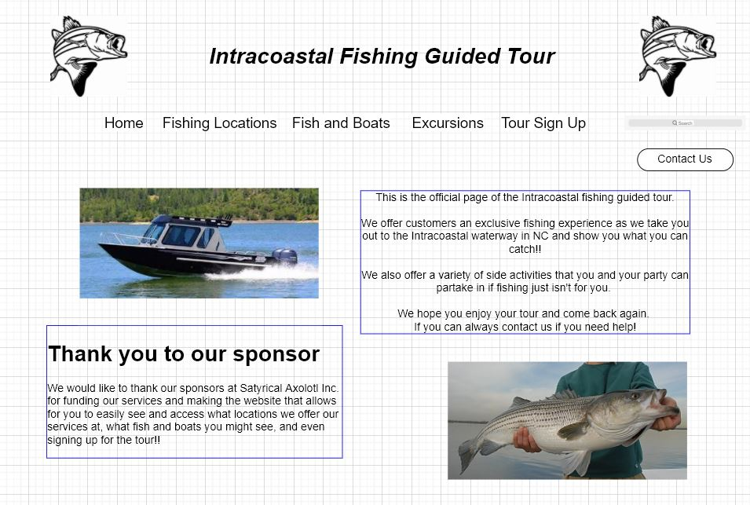
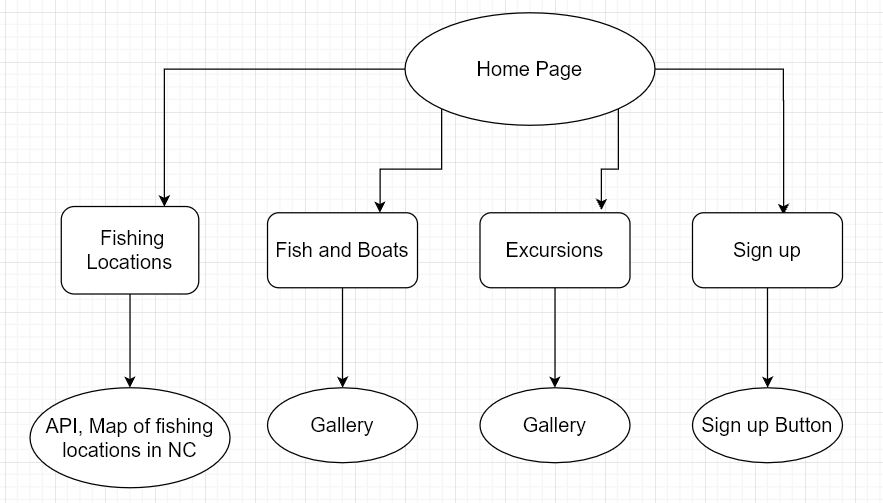

This webpage is a guide service to intracoastal fishing in NC, that is being built at the request of Michael Piercy.
The intended user base for this page will be myself, Michael, and other intracoastal fishing entusiasts.
The webpage will be linked to four other pages.
They will give the user an overview of where one could go participate in intracoastal fishing,
allows the user to see the types of fish they could catch and boats they could sail on,
a list of excursions such as restaurants and other non-fishing related activities,
, and a form for them to sign up for a time and date slot to go on a fishing tour.
Client Information
Micheal Piercy
He is currently a student at UNCC and has expressed interest in knowing more about intracoastal fishing.
mpiercy6@uncc.edu
Phone number is unavailable at this time
Wireframe

Site Map

Page Design
Home Page
Starting page for intracoastal fishing enthusiasts in NC that a user can use to navigate the other attached pages and contact the creator.
Users, Admin (editing)
Basic info on intracoastal fishing, creator of webpage, and contact information.
No
No
No
Text and images processed.
Starting page.
Fishing Locations
This page will show a map that the user can interact with to show.
Users who wish to see fishing locations in NC, Admin staff (editing)
This page has in interactive map that the user can use to look around the intracoastal waterway in NC
No
No
No
Data processed, map displayed through JS functions.
The interactive map is done either through google maps or an API
Excursions
This page shows the user a list of non-fishing activities around the fishing guide area.
Users who wish to see the excursions available, Admin staff (editing)
This page has a gallery to go with the list of excursions.
No
No
No
Images processed
Gallery slideshow of pictures.
Fish and Boats
This page shows the user a list of the fish you can catch and the boats used around the fishing guide area.
Users who wish to see the fish in the area as well as the boats that can be sailed, Admin staff (editing)
This page has a gallery to go with the list of fish and boats that are seen/used on the tour.
No
No
No
Images processed
Gallery slideshow of pictures.
Sign Up
A page for the user to sign up for a intracoastal fishing guided tour.
Users who wish to sign up and embark on the fishing guided tour, Admin staff (editing)
This page has a form that takes in user info to sign them up for a tour slot.
Yes
Yes
Yes
Data processed, Data is displayed on the page
An array of dates is checked against the user's selection to see if they are ellgible.
Then they are added to an array that holds a list of people going on the tour that day.
Dynamic Functionality
The following functions will be implemented using javascript:
A gallery will be implemented on the Fish and Boats page as well as the Excursions page.
An interactive map on the Fishing Locations page will show a popular intracoastal waterway in NC.
A form to get info about the user and their party and sign them up for a fishing tour.